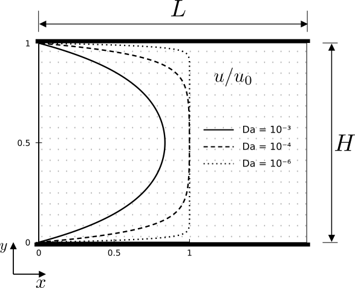

Grayscale Poiseuille Flow¶
Starting from the two-dimensional, steady-state Darcy–Brinkman equation for unidirectional flow along the \(x\)-direction, driven by a constant body force (\(g\)) and an imposed pressure gradient, we consider a homogeneous porous medium characterized by constant porosity, permeability, and effective viscosity. The velocity varies only in the transverse \(y\)-direction. The governing equation is given by:
Letting the effective driving force be:
The general solution for the velocity profile \(u(y)\) for a given medium is expressed using hyperbolic functions:
Here, the coefficients \(A\) and \(B\) are determined by applying specific boundary conditions. For Poiseuille flow within a single porous medium confined between two stationary impermeable plates located at \(y = 0\) and \(y = H\), the no-slip condition applies: \(u(0) = 0\) and \(u(H) = 0\).
Applying these conditions to the general solution yields the coefficients \(A\) and \(B\). The resulting velocity profile is:
The mean velocity is calculated as:
Consequently, the equivalent permeability for Poiseuille flow is:
Validation setup and results¶
To assess the model’s accuracy in predicting flow through a homogeneous porous medium confined between two stationary impermeable walls, a Poiseuille flow benchmark was considered. The computational domain is 50 voxels long, 50 voxels wide, and 102 voxels high. Its height comprises a 100-voxel porous region bounded by two solid wall planes, each one voxel thick (Fig. 40).
The porous region was assigned a uniform porosity of \(\epsilon = 0.3\) and an intrinsic permeability of \(K = 250.0 \ \mu\text{m}^2\). The simulations used a spatial resolution of \(0.5 \ \mu\text{m}/\text{voxel}\), a relaxation time of \(\tau \approx 0.933\), and a uniform body force of magnitude \(10^{-8}\) in lattice units, applied along the \(z\)-direction.


Fig. 40 - Schematic of Poiseuille flow through a homogeneous porous medium confined between two impermeable walls.¶
Porosity and permeability were assigned using two methods configured
in input.db: label-based property lists and voxelwise property maps.
The Python functions used to generate the geometry and property maps
are provided in the expandable section below.
Click to expand:Python Code to Generate Grayscale Poiseuille Geometry
import os
import numpy as np
def generate_geometry_raw(length: int, height: int, output_dir: str) -> None:
shape = (length, height + 2, length)
geometry = np.ones(shape, dtype=np.uint8)
geometry[:, 0, :] = 0
geometry[:, -1, :] = 0
filepath = os.path.join(output_dir, "input.raw")
geometry.tofile(filepath)
def generate_permeability_raw(
length: int, height: int, permeability: float, output_dir: str
) -> None:
shape = (length, height + 2, length)
permeability_matrix = np.full(shape, permeability, dtype=np.float64)
permeability_matrix[:, 0, :] = 0.0
permeability_matrix[:, -1, :] = 0.0
filepath = os.path.join(output_dir, "permeability.raw")
permeability_matrix.tofile(filepath)
def generate_porosity_raw(
length: int, height: int, porosity: float, output_dir: str
) -> None:
shape = (length, height + 2, length)
porosity_matrix = np.full(shape, porosity, dtype=np.float64)
porosity_matrix[:, 0, :] = 0.0
porosity_matrix[:, -1, :] = 0.0
filepath = os.path.join(output_dir, "porosity.raw")
porosity_matrix.tofile(filepath)
Four cases were simulated by combining the two property-assignment methods with Forchheimer drag either disabled or enabled. Table 16 presents the numerical results alongside the reported analytical Darcy–Brinkman reference, which excludes nonlinear Forchheimer drag.
With Forchheimer drag disabled, both methods yield a sample permeability of \(48.6490 \ \mu\text{m}^2\), approximately \(0.0167\%\) above the reported analytical value of \(48.6409 \ \mu\text{m}^2\). Enabling Forchheimer drag reduces the apparent permeability to \(48.6100 \ \mu\text{m}^2\), a decrease of approximately \(0.0802\%\) relative to the numerical cases without nonlinear drag. Both property-assignment methods give the same results to the precision reported.
Case |
Mode |
Forchheimer |
Porosity |
Permeability [ \(\mu\text{m}^2\) ] |
|---|---|---|---|---|
Analytical |
Math |
False |
0.2942 |
48.6409 |
Case 1 |
Labels |
False |
0.2940 |
48.6490 |
Case 2 |
Files |
False |
0.2940 |
48.6490 |
Case 3 |
Labels |
True |
0.2940 |
48.6100 |
Case 4 |
Files |
True |
0.2940 |
48.6100 |
An example input.db configuration is provided in the expandable
Click to expand: Poiseuille example .db file
Greyscale {
tau = 0.9330127
F = 0.0, 0.0, 1e-08
timestepMax = 1000000
tolerance = 1e-12
collision = "MRT"
Forchheimer = false
ComponentLabels = 1 // not necessary for file aproach
PorosityList = 0.3 // or FileVoxelPorosityMap = "porosity.raw", "double"
PermeabilityList = 250.0 // or FileVoxelPermeabilityMap = "permeability.raw", "double"
}
Domain {
Filename = "input.raw"
ReadType = "8bit"
offset = 0, 0, 0
voxel_length = 0.5
N = 50, 120, 50
nproc = 1, 1, 1
n = 50, 102, 50
ReadValues = 0, 1
WriteValues = 0, 1
InletLayers = 0, 0, 0
OutletLayers = 0, 0, 0
BC = 0
}
Visualization {
format = "vtk"
write_silo = true
save_8bit_raw = false
save_phase_field = true
save_pressure = true
save_velocity = true
}
Analysis {
analysis_interval = 1000
subphase_analysis_interval = 5000
visualization_interval = 1000000
N_threads = 1
restart_interval = 1000000
restart_file = "Restart"
}